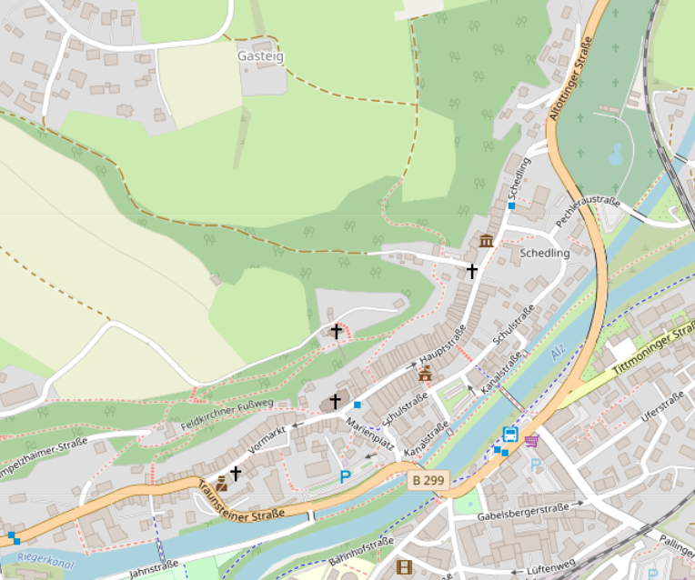
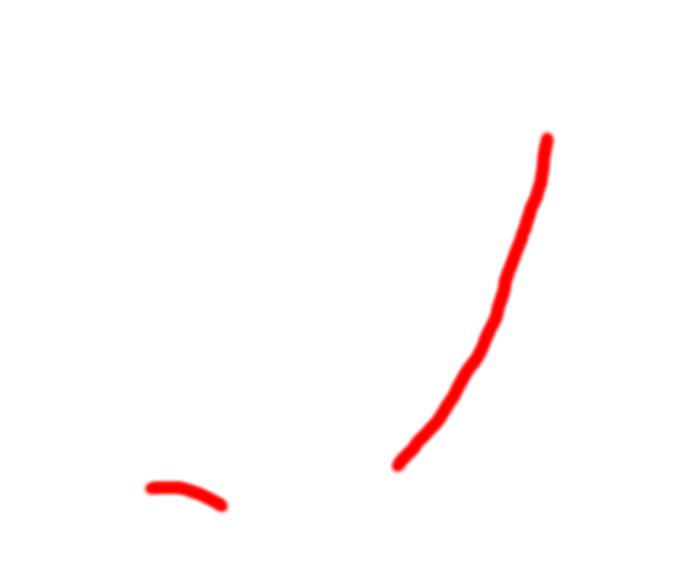
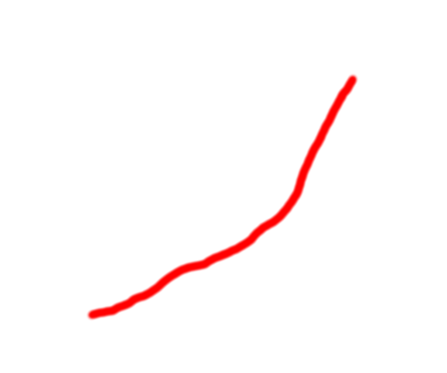

Trostberg B299 - Begradigung statt Umfahrung
meine wunschlösung:
begradigung statt umfahrung
also die B299 so begradigen
dass man auch mit 70 km/h
durch trostberg fahren kann
(offiziell nur 50 km/h)
frage: was würde das kosten?
(im vergleich zu den umfahrungen)
- grundstücke enteignen (ja das ist legal)
- häuser abreissen
- den berghang terassieren für die straße
- langfristig gesparte benzinkosten
weil man sich das bergauf-fahren spart
begradigung - ich sehe 2 varianten:
Die kleine Begradigung


die "kleine" begradigung:
(das ist die realistische variante)
die kurve bei der polizei wird begradigt
(circa 4 häuser müssen weg)
statt "über die alz und zurück"
geht die B299 gerade weiter
im bereich kanalstraße, schulstraße, schedling
und dann gerade weiter
in die altöttinger straße
(circa 15 häuser müssen weg)
Die große Begradigung

die "große" begradigung:
(das ist die unrealistische variante)
die B299 geht gerade im bereich
vormarkt, hauptstraße, schedling
dazu müsste man eine seite der altstadt
komplett abreissen
mein vorschlag wäre:
die bergseite abreissen
weil die häuser am berg
ziehen ständig feuchtigkeit
aus dem berg in die mauern
und die häuser sind immer "muffig"
(circa 65 häuser müssen weg)
(die scheiss kirche ist auch nur ein haus)
Null Euro Lösung
die "null euro lösung wäre:
wir machen nichts und warten auf den dritten weltkrieg
und hoffen, dass irgendwer fliegerbomben auf die altstadt wirft
also vor allem auf vormarkt, hauptstraße und schedling.
dann können wir in der zukunft eine gerade B299 durch trostberg bauen.
siehe auch